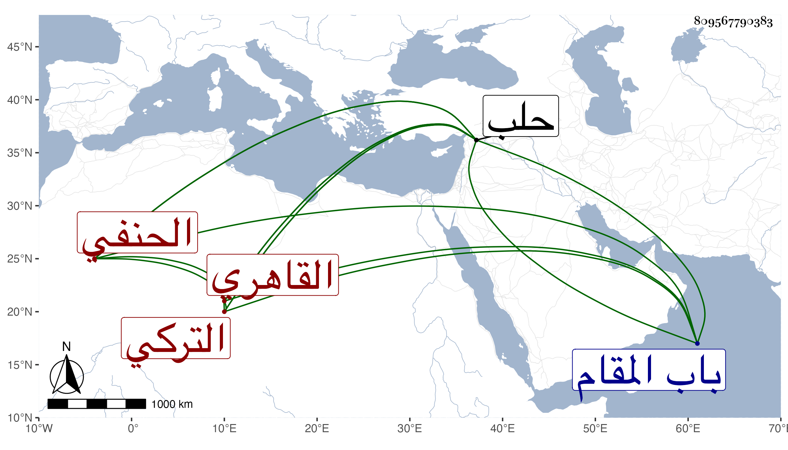

0902Sakhawi.DawLamic.ITO20230111-ara1.EIS1600.809567790383
Biography ID: 809567790383
198
أحمد بن كندغدي بنون ساكنة بعد الكاف المفتوحة وغين معجمة بدل المهملة المضمومة وكسر الدال بعدها تحتانية شهاب الدين التركي القاهري الحنفي نزيل الحسينية بالقرب من جامع آل ملك . كان عالما فقيها دينا بزي الأجناد توجه عن الناصر فرج رسولا إلى تمرلنك فمرض بحلب وعزم على الرجوع فاشتد مرضه حتى مات بها في ليلة السبت رابع عشر ربيع الأول سنة سبع وصلى عليه من الغد ودفن خارج باب المقام بتربة موسى الحاجب وقد جاز الستين . ذكره ابن خطيب الناصرية وأورده شيخنا في معجمه وضبطه كما قدمنا وقال : أحد الفضلاء المهرة في فقه الحنفية والفنون اتصل أخيرا بالظاهر برقوق ونادمه ثم أرسله الناصر إلى تمرلنك فمات بحلب في جمادى الأولى كذا قال سمعت من فوائده كثيرا وقرأ عليه صاحبنا المجد بن مكانس القمامات بحثا ، زاد في إنبائه وكان يجيد تقريرها على ما أخبرني به المجد وقال فيه إن اشتغل في عدة علوم وفاق فيها واتصل بالظاهر في أواخر دولته ونادمه بتربته شيخ الصفوي أحد خواص الظاهر وحصل الكثير من الدنيا وقال إنه مات قبل أن يؤدي الرسالة في رابع عشر ربيع الأول . أرخه البرهان المحدث وأثنى عليه بالعلم والمروءة ومكارم الأخلاق . وقال العيني أنه كان ذكيا مستحضرا مع بعض مجازفة ويتكلم بالتركي . وممن ذكره القمريزي في عقوده وقال إنه قارب الخمسين وبلغها رحمه الله .
